I was recently asked what inspires me.
To answer this question, I thought back to the very beginning.
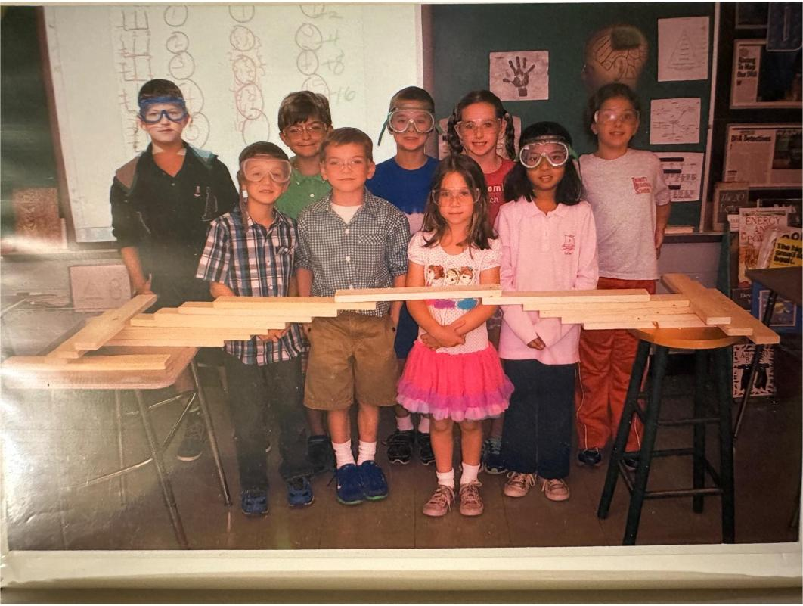
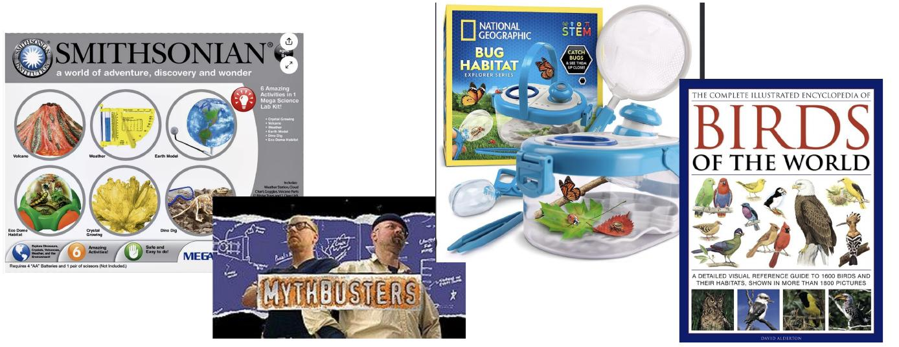
When I was little, everything was interesting.
I was the nerdiest kid ever: I loved at-home experiments, backyard adventures, and nonfiction nature books.
No motive other than curiosity and wanting to make things.
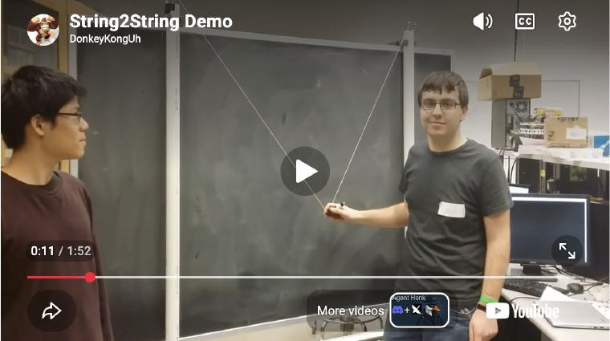
My older brother Caleb helped propel these passions for me.
For reference, Caleb's 12 years older than me, so when I was graduating elementary school, he was finishing up his master's degree in electrical engineering from Cooper.
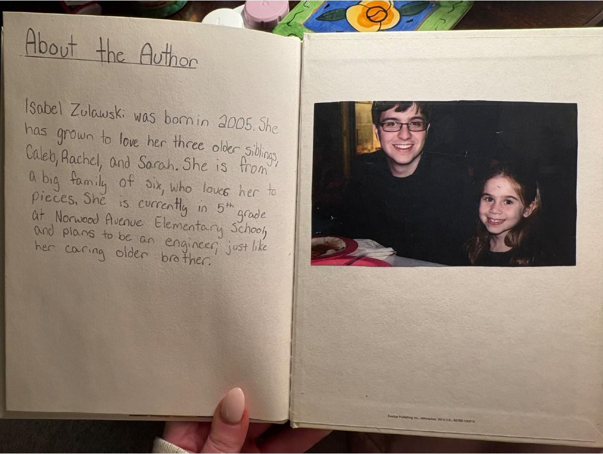
Naturally, I wanted to go to Cooper and be just like him.
But science wasn't my only interest.
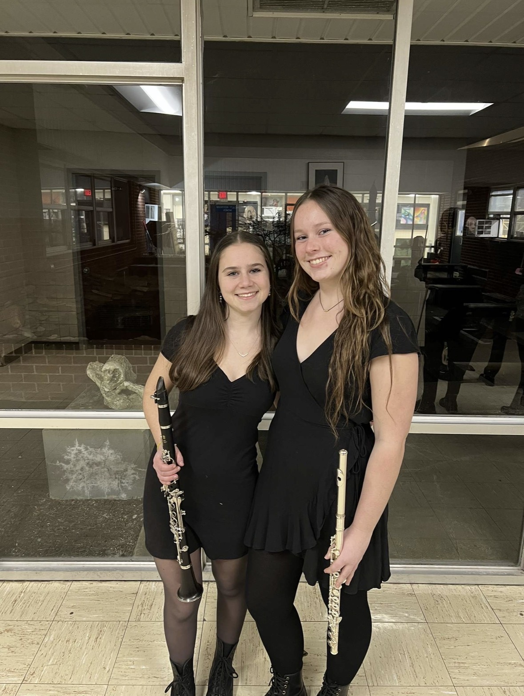
Music was a huge part of my life, too.
By high school, I spent almost all my free time practicing, rehearsing, and performing.
So studying engineering seemed like the perfect fit.
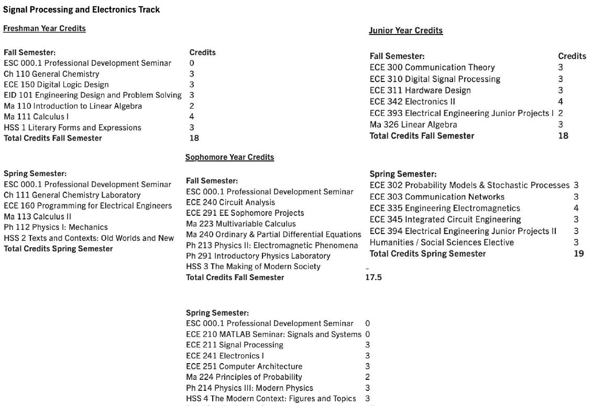
But when I got to Cooper, it wasn't what I expected.
I had absolutely no time for anything outside the syllabus. My life was (and still mostly is) theory and assignments.
Don't get me wrong, I've learned so much over the past four years.
But somewhere along the way, I stopped making time for the things that made me want to study engineering in the first place.
Experimenting just to experiment. Making things just because they interested me. Even music had taken a back seat.
This semester, I finally was able to take some electives.
One of them was an art class.
For the first time in a while, I was encouraged to make things without knowing exactly what the outcome would be.
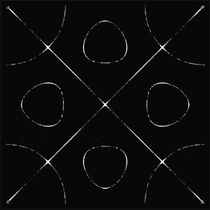
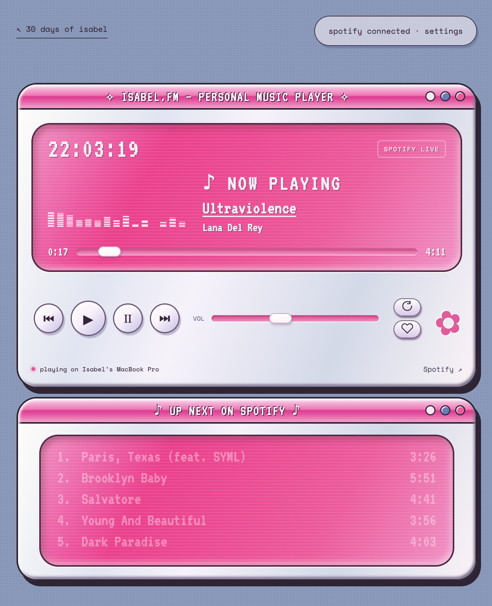
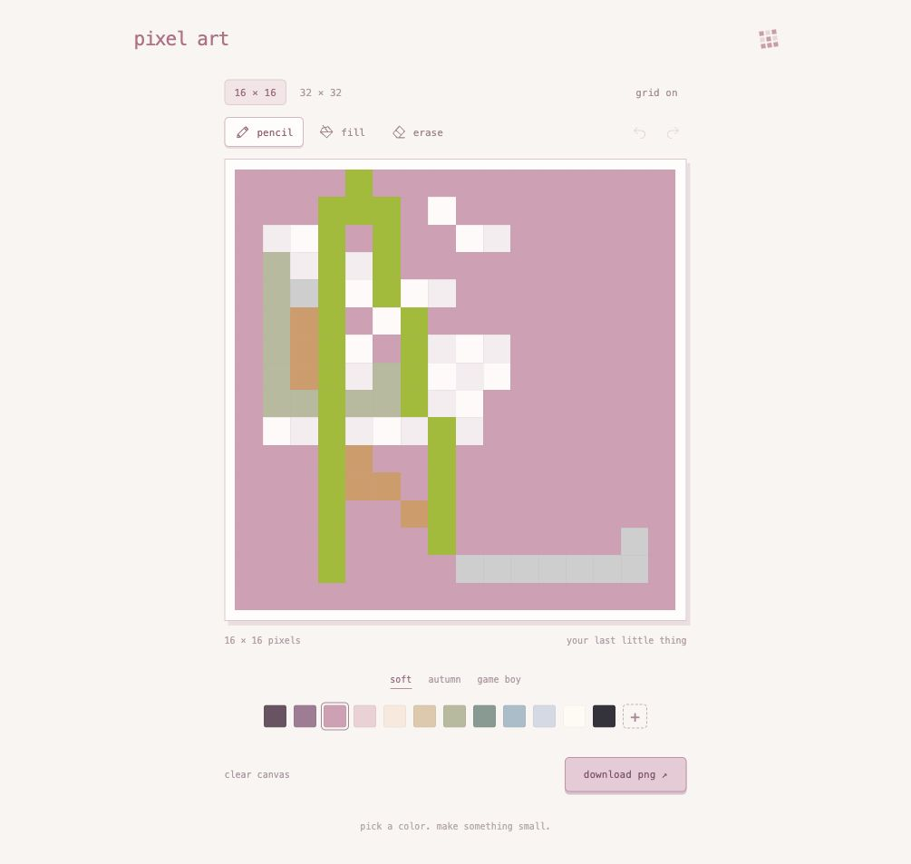
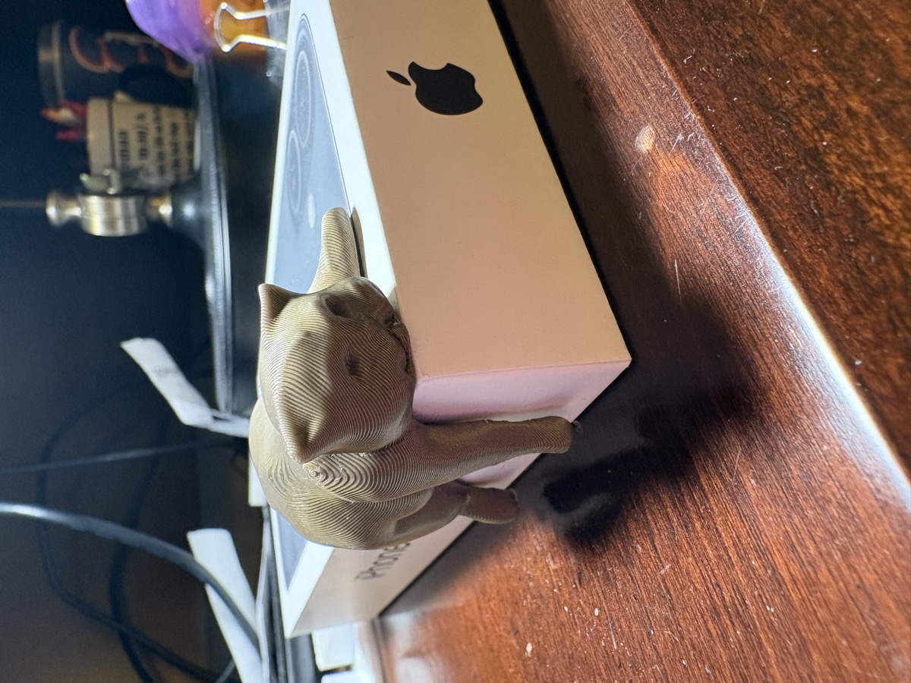
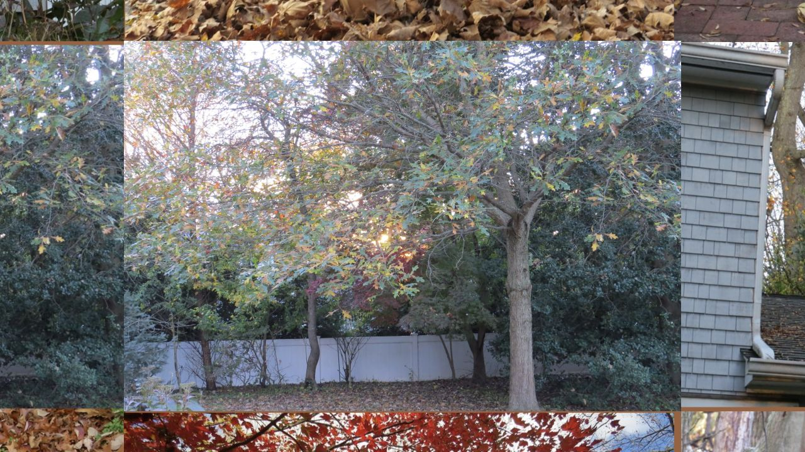
Instead of being given a problem to solve, I was coming up with my own questions.

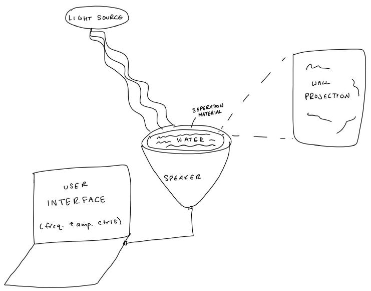
I also started a creative coding independent study, where I've been able to combine my interests in music, science, and art.
Suddenly, I was experimenting, learning new skills, and making things just because I wanted to.
And I realized how much I'd missed that.
Engineering has taught me how to solve problems, but art has reminded me that not everything needs to start with a problem.
Sometimes it's enough to be curious.
When I was little, everything was interesting.
I'm starting to remember what that felt like.
So, why would I take an art class?
Because I didn't go into engineering just to learn how to solve problems.
I went into engineering because I was curious.
And art is helping me remember that!